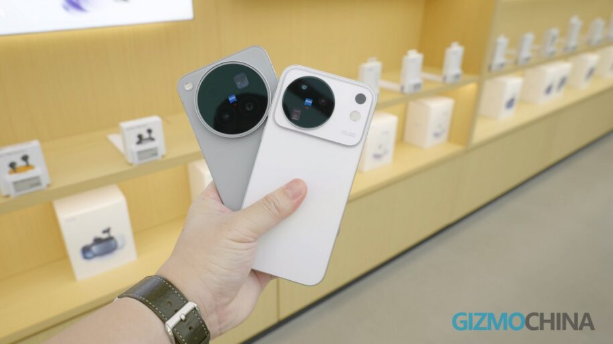
THE TECH EDIT
기술의 변화, 매일 한눈에.
카메라 · 스마트폰 · AI, 해외 테크 소식을 모아 전합니다.
최근 발행2026-10-09
새로 들어온 소식
LATEST STORIES
최신 뉴스
전체 3,537개 기사
계단형 터미널의 첫 대규모 모델 네이티브 AI 스마트폰 STEPX Neo, 10월 13일 출시 예정

"세계에서 가장 작은 풀프레임 카메라" 후속작: 시그마 fp II 공개, 전자식 뷰파인더 내장
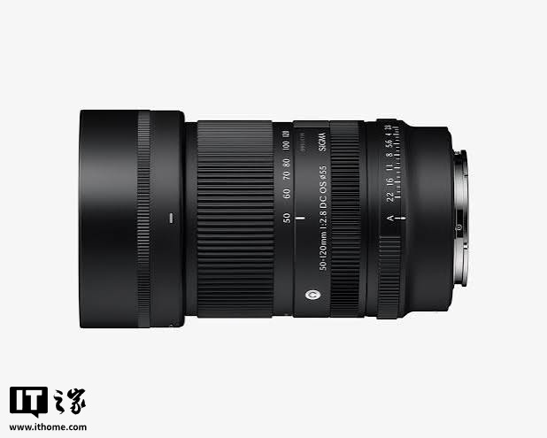
시그마, APS-C용 50-120mm F2.8 DC OS 망원 줌 렌즈 발표: Sony E / Fujifilm X / Canon RF 마운트 지원
Samsung, 베트남에 100조 동 이상 투자해 반도체 후공정 테스트 공장 2곳 건설 예정

"팔아도 돈이 안 돼": Samsung 스마트폰, 2026년 4분기 최대 30% 감산 예정

레드매직 12 Pro+ 스마트폰 외관 공개: 언더 디스플레이 카메라 디자인 유지, 10월 15일 발표
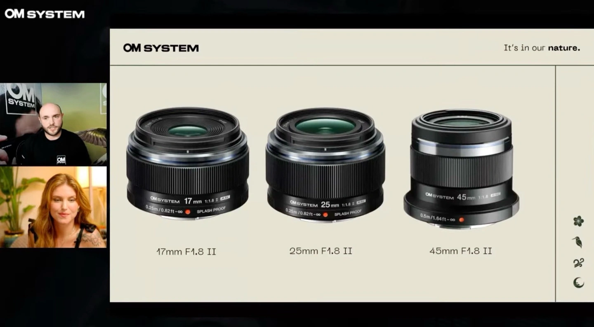
OM 디지털 솔루션, M.Zuiko Digital 45mm f/1.8 II, 40-150mm f/4.5-5.6 R II 렌즈 2종 공개

오필름, Huawei Pura 90 Pro 시리즈 메인 카메라 및 2억 화소 페리스코프 망원 렌즈 독점 공급 예정
Huawei, 향후 더 많은 스마트폰에서 다중 기기 상호 통신 공유 지원 예정, Pad, PC도 동기화 가능
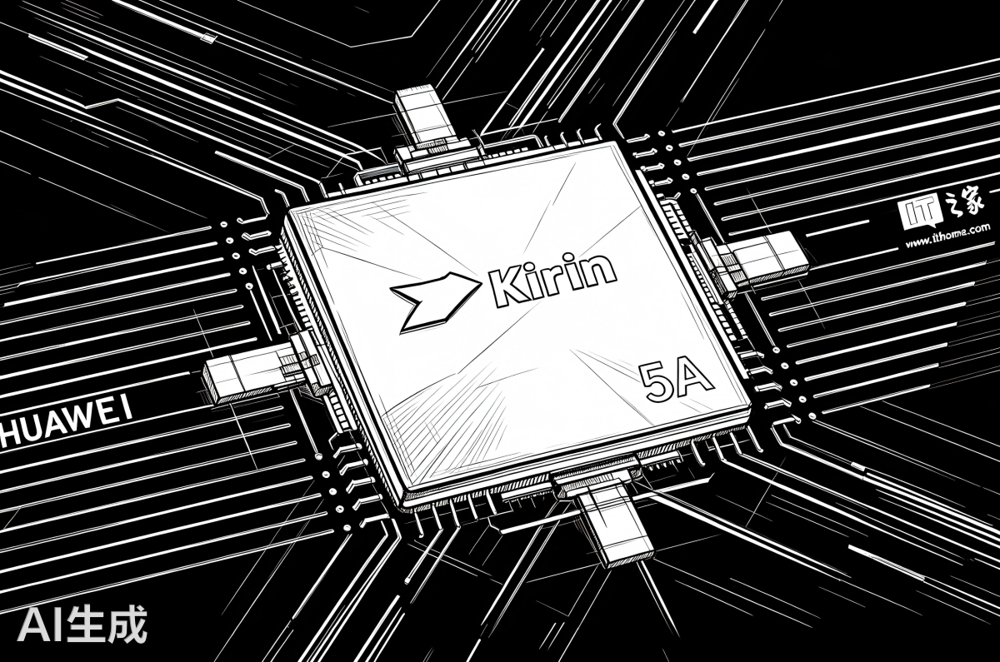
위청둥: 미래에는 더 많은 Huawei 스마트폰이 황의 법칙 기반 논리 폴더블 칩을 채택할 것입니다
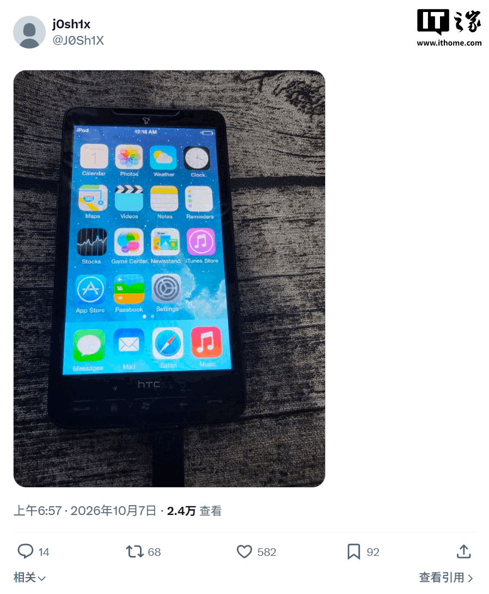
2010년 클래식 스마트폰 HTC HD2, Apple iOS 7 구동 성공 및 관련 코드 오픈소스화
Honor도 자체 폴더블 및 바 타입 스마트폰을 개발 중이라는 소식
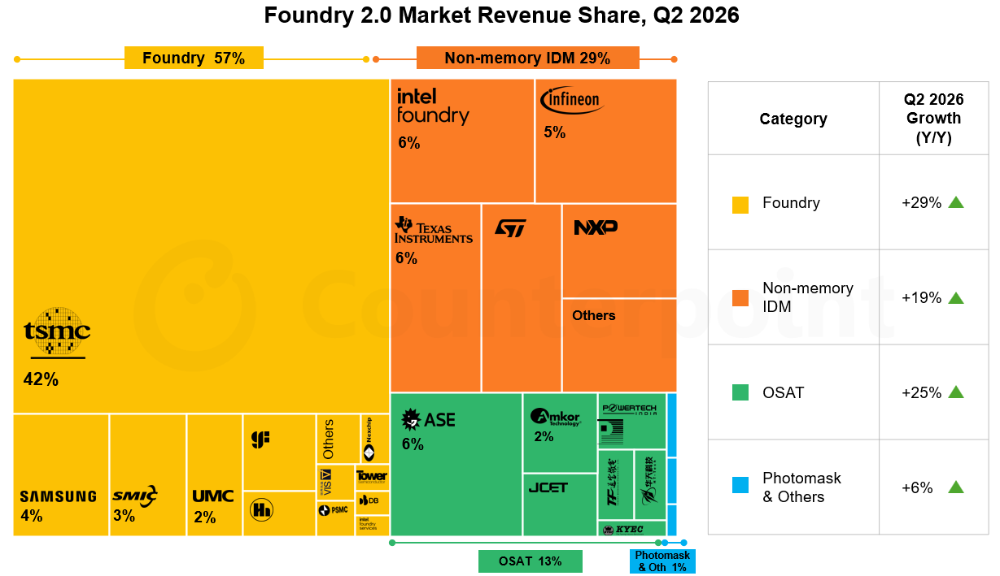
Counterpoint 데이터: 파운드리 2.0 매출 2026년 2분기 966억 달러 달성, 전년 대비 25% 증가

둠 게임, 약 8,000달러 하셀블라드 X2D 카메라에 이식: 터치스크린으로 이동, 셔터 버튼으로 발사
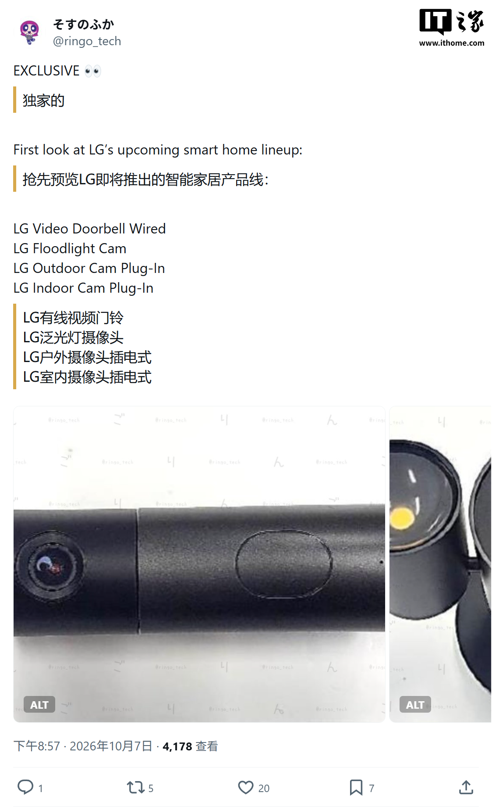
Apple과 LG 스마트홈 협력으로 도어벨, 실내 및 실외용 카메라 신제품 4종 추가 공개
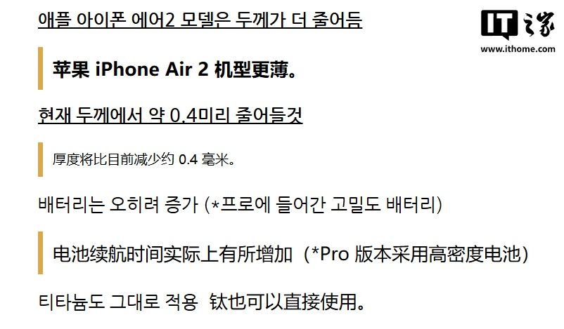
Apple iPhone Air 2 유출: 두께 0.4mm 감소한 5.2mm, 고밀도 배터리로 배터리 수명 향상
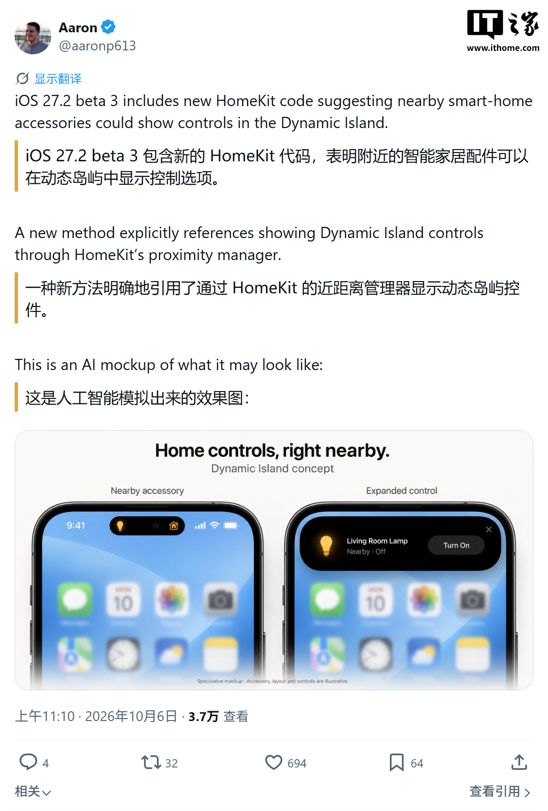
Apple iOS 27.2 베타 3의 새로운 기능: iPhone 18 Pro 등 다이내믹 아일랜드에서 주변 스마트 홈 제품 직접 제어 가능
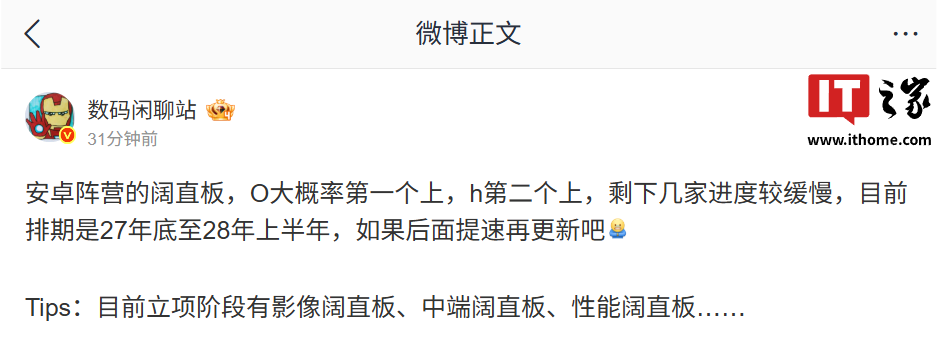
안드로이드 바 타입 스마트폰 출시, 2027년 말~2028년 상반기 예정 - 이미지, 중급, 성능 중심 모델 기획 단계
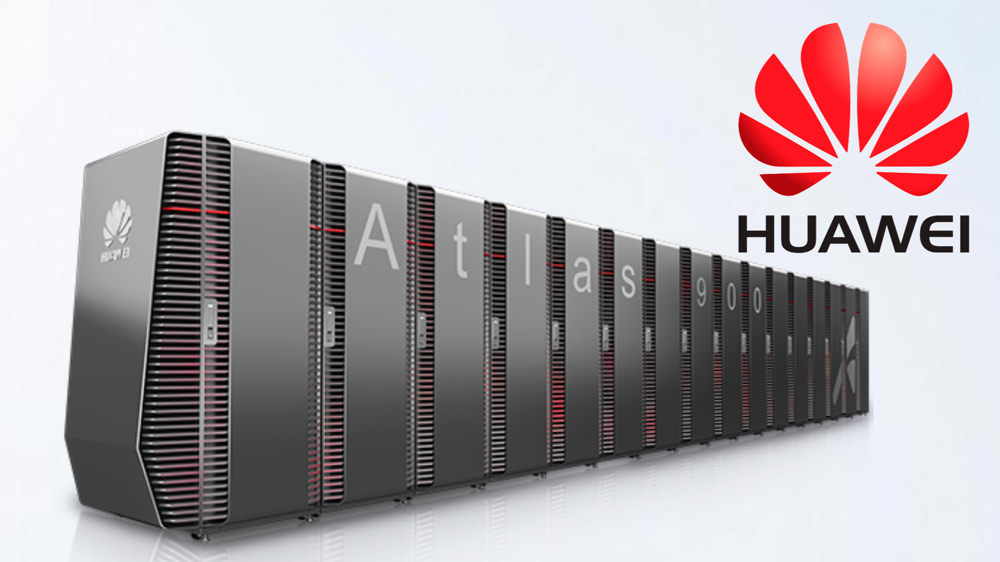
화웨이 AI 칩, 중국 시장서 엔비디아 판매량 추월…자체 개발 대안 구축에 의미 있는 진전

2027년 대학원 입학 온라인 사전 등록 10월 9일 시작: 등록 확인 최초 통합, 학신망 앱 온라인 사진 촬영

AirDrop 연동: Xiaomi 18 Pro Max 스마트폰, "Apple 기기 간 파일 전송" 기능 출시
검색 결과가 없습니다
다른 검색어를 입력하거나 필터를 초기화해 보세요.